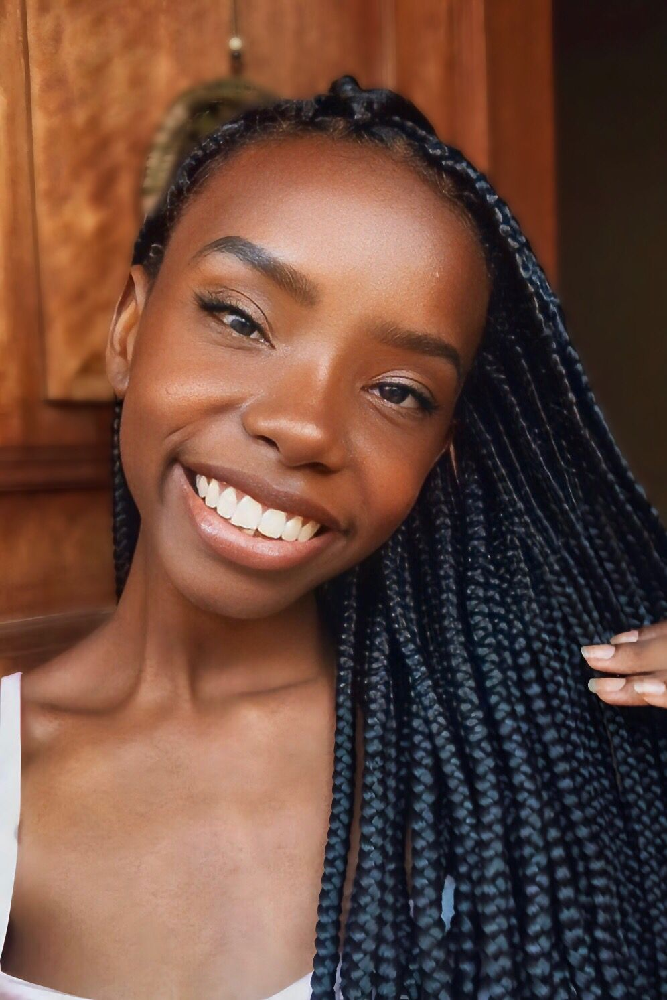

SOU ESPECIALISTA EM BEBÊS
REBORN NEGROS!

SOBRE MIM
Bem-vindo ao AfroReborn, sou Inaraí Silva, a mente criativa por trás de cada bebê reborn que você vê aqui. Meu trabalho é dedicado à arte reborn de bebês negros, uma expressão de amor e celebração da beleza e diversidade afrodescendente. Cada criação é uma homenagem à maternidade e à cultura, capturando a essência única de cada criança.
Conheça MaisVEJA ALGUNS DOS MEUS TRABALHOS
Esses são alguns dos trabalhos que já realizei ao longo da minha carreira.